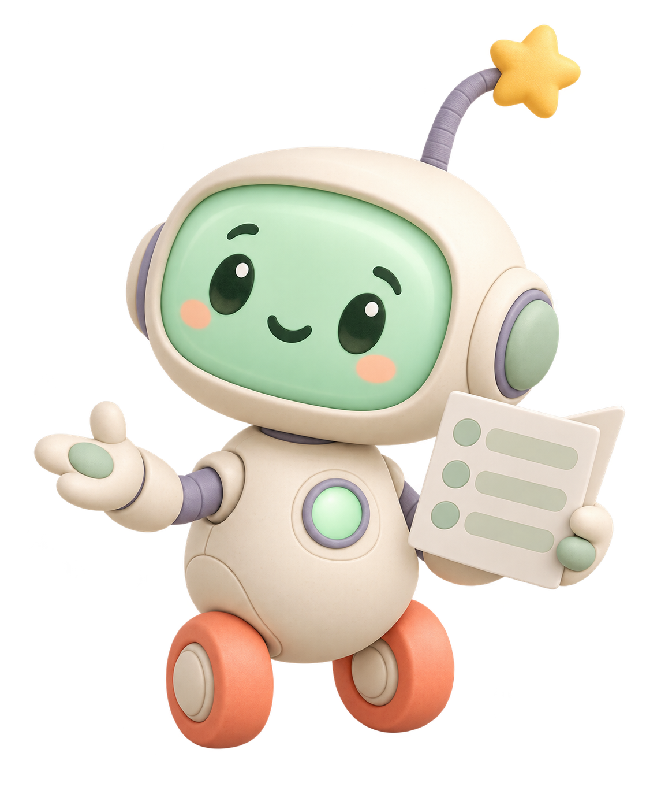

Meet the concept
A chore robot with a soft voice and a long memory.
The robot remembers the routine so the person does not have to hold every step in mind. It can remind, reteach, pause, and reset. It never becomes another person in the room waiting to be disappointed.

Calm by designDesigned for the hard minute
Lots of visual signals, none of them a panic alarm.
Soft status
Mint, lavender, cream, and coral give the page a clear visual rhythm without turning a missed chore into an emergency.
Local graphics
The mascot, towel, basket, pause pose, and motion accents are bundled locally. No remote image service is required.
One next action
Every visual loop points somewhere concrete, so the person can start without reading a wall of instructions.
Patient reteaching
Forgetting a chore does not shorten the robot's patience. The routine can come back whenever it is useful.
Recovery motion
The open-hand reset pose makes pause visible and gives a small mess a safe next move.
Clear limits
This is a concept page, not medical treatment, not control over another person, and not a substitute for support.
Start with one forgotten chore.
There is no perfect-home test. There is only a next step that can be taught again.